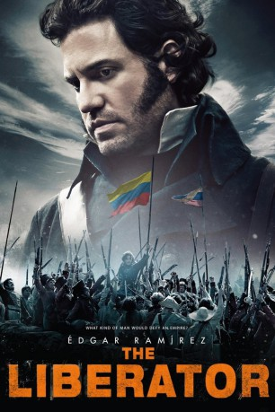
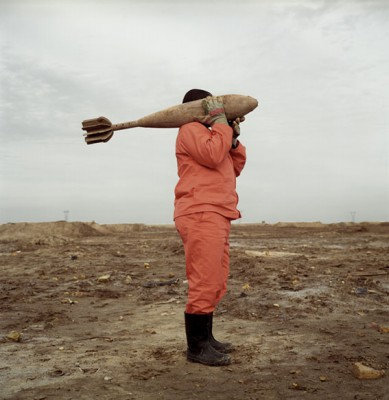

#1739 The Liberator
 
 IMDB-Wertung: 6.9 / 10
IMDB-Wertung: 6.9 / 10  Metascore: 51
Metascore: 51 
Simón Bolívar (Edgar Ramírez) genießt eine erfüllte Kindheit. Nachdem er auf der Kakao-Plantage seiner Eltern in Venezuela behütet aufgewachsen ist, ist ihm auch eine ausgezeichnete akademische Ausbildung vergönnt. Im Jahr 1784 verschlägt es den mittlerweile jungen Mann nach Europa. Dort kommt er mit den Idealen der Aufklärung in Kontakt und macht sich die Idee zu eigen. Als der Venezolaner in seine Heimat zurückkehrt, muss er mit Erschrecken feststellen, dass Gesellschaft und Politik von dem zunehmenden Nationalbewusstsein der spanischen Kolonien geprägt sind. Schließlich fasst Bolívar den Entschluss, seinem Volk als Unabhängigkeitskämpfer zu dienen und schließt sich in Caracas einer Widerstandsjunta an. Sechs Jahre nach seiner Rückkehr aus Europa in die Heimat verkündet die Gruppierung im Jahre 1810 schließlich die Selbstverwaltung Venezuelas. Doch der Kampf um Freiheit hat für den "Libertador" gerade erst begonnen…
Jahr: 2013
Dauer: 119 Minuten
FSK: 12
Land: Venezuela Studio: Edel Media & EntertainmentTonspuren:
Untertitel:
Auflösung: 1080p (1920x816) Größe: 6809 MB
Genre: Drama, Geschichte, Biographie
Regisseur: Alberto Arvelo
Drehbuch: Timothy J. Sexton
Soundtrack: Gustavo Dudamel
Darsteller:
-  Édgar Ramírez als Simon Bolivar
- Erich Wildpret als Antonio Jose de Sucre
 María Valverde als Maria Teresa Bolivar
María Valverde als Maria Teresa Bolivar Dacio Caballero als Soldado irlandes
Dacio Caballero als Soldado irlandes- Alejandro Furth als Urdaneta
- Jesus Guevara als Messenger
 Danny Huston als Torkington
Danny Huston als Torkington Gary Lewis als James Rooke
Gary Lewis als James Rooke- Carlos Julio Molina als Jose Felix Ribas
- Iwan Rheon als Daniel O'Leary
- Elisa Sednaoui als Fanny
- Steve Wilcox als Black Rider
- Imanol Arias als Juan Domingo de Monteverde
- Leandro Arvelo als Fernando
- Marta Benvenuty als Voice Over
- Jon Bermúdez als Spanish officer
- Marcelo Galván als Extra
- Luis Jaspe als Aide de Camp
- Pepe Lorente als Royal Palace Assistant
- Chechu Moltó als
- Carmelo Muñoz Adame als Wounded soldier
- Antonio Pardo als Spanish officer
- Juan Quijano als Royal Guard
- Orlando Valenzuela als
- Juvel Vielma als José Antonio Páez
- José Manuel Pichardo als Soldado Patriota , uncredited
- Pablo Puglisi als Colombiano , uncredited
- Daniela M. Xandru als Fair Lady of the Royal Palace , uncredited
Datei: X:\2013(I-M)\Liberator, The (2013, FSK12, 1920x816).mkv seit 12.08.2015
Festplatte: HD 2013(I-Z)-2014(A-Z)
 Es gibt insgesamt 89 Filme in der Gruppe '2013(I-M)'
Es gibt insgesamt 89 Filme in der Gruppe '2013(I-M)'